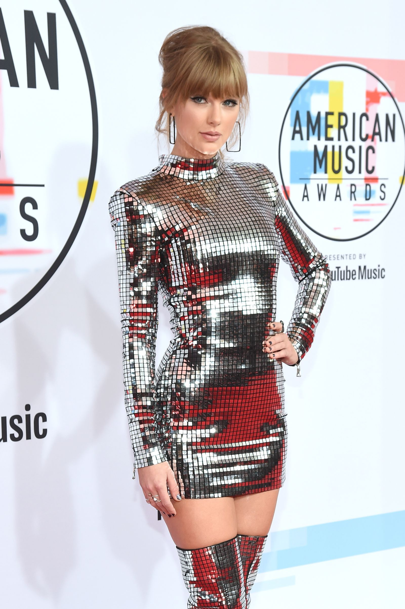
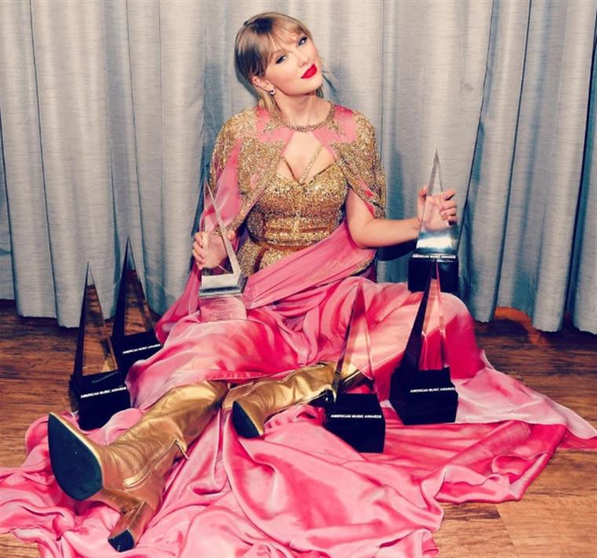

The American Music Awards is an annual American music awards show, generally held in the fall, created by Dick Clark in 1973 for ABC when the network's contract to air the Grammy Awards expired, and currently produced by MRC Live & Alternative, which Dick Clark Productions was folded into in the fall of 2021. From 1973 to 2005, both the winners and the nominations were selected by members of the music industry, based on commercial performance, such as sales and airplay. Since 2006, winners have been determined by a poll of the public and fans, who can vote through the AMAs website.
From 1973 to 2005, both the winners and the nominations were selected by members of the music industry, based on commercial performance, such as sales and airplay. Since 2006, winners have been determined by a poll of the public and fans, who can vote through the AMAs website, while nominations have remained based on sales, airplay, now including activity on social networks, and video viewing. Before 2010, had nominations based only on sales and airplay and nominated every work, even if old. The Grammys have nominations based on vote of the Academy and only nominate a work from their eligibility period that changes often.
The award statuette is manufactured by New York firm Society Awards.
The first hosts for the first telecast of the AMAs were Helen Reddy, Roger Miller, and Smokey Robinson. Helen Reddy not only hosted the show but also became the first female artist to win an AMA for Favorite Pop/Rock Female artist. For the first decade or so, the AMAs had multiple hosts, each representing a genre of music. For instance, Glen Campbell would host the country portion (Campbell, in fact, has co-hosted the AMAs more times than any other host or co-host), while other artists would co-host to represent their genre. In recent years, however, there has been one single host.
In 1991, Keenen Ivory Wayans became the first Hollywood actor to host the AMAs.
From its inception in 1973 through 2002, the AMAs were held in mid- to late-January, but were moved to November (usually the Sunday before Thanksgiving) beginning in 2003 so as not to further compete with other major awards shows (such as the Golden Globe Awards and the Academy Awards) and allows for ABC to have a well-rated awards show during November sweeps.
For the 2008 awards, Jimmy Kimmel hosted for the fourth consecutive year. In 2009–2012, there was no host for the first time in history. Instead, the AMAs followed the Grammys' lead in having various celebrities give introductions. However, rapper Pitbull hosted the 2013 ceremony and 2014 ceremony. Jennifer Lopez hosted the 2015 show.Gigi Hadid and Jay Pharoah hosted the 2016 show. Tracee Ellis Ross hosted the show in 2017 and 2018. Ciara hosted the 2019 show.

Between 2012 and 2014, as part of a marketing strategy for Samsung, the American Music Awards used the lock screen wallpaper of Samsung Galaxy smartphones rather than envelopes to reveal winners. A magnetic screen cover on each phone kept the wallpaper image with the winner's name secret until opened.
In August 2018, Dick Clark Productions announced a two-year sponsorship and content partnership with YouTube Music.
The record for most American Music Awards won is held by Taylor Swift, who has amassed thirty-four awards. The record for most American Music Awards won by a male artist belongs to Michael Jackson, who has collected twenty-six awards. The record for most American Music Awards won by a group belongs to Alabama, who have collected eighteen awards.O "Dick Clark Award of Excellence" was presented just to the singer & songwritter Taylor Swift, in 2014. She was also elected "Artist Of The Decade" of the 2010's
American network Telemundo acquired the rights to produce a Spanish-language version of the American Music Awards and launched the Latin American Music Awards in 2015.